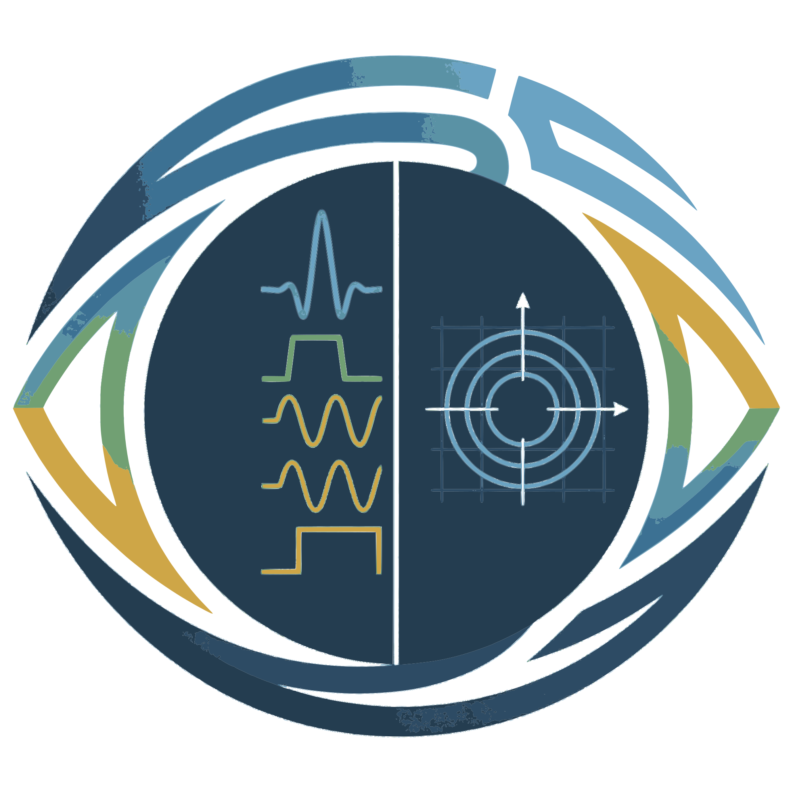
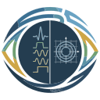

SeqEyes
Pulseq MRI Sequence Viewer
Open .seq File
Or drag & drop a
.seq
file here
Try with example files from
pulseq/pulseq

Open
Export
Select PNS ASC file
+
−
Fit
↺
Theme:
System
One Light
One Dark
Dracula
Nord
GitHub Light
GitHub
Time:
s
ms
µs
Grad:
Hz/m
mT/m
G/cm
Blocks
K-Space
← hover for time
Loading sequence…
0%
↺
Prj
Unit: 1/m
Size